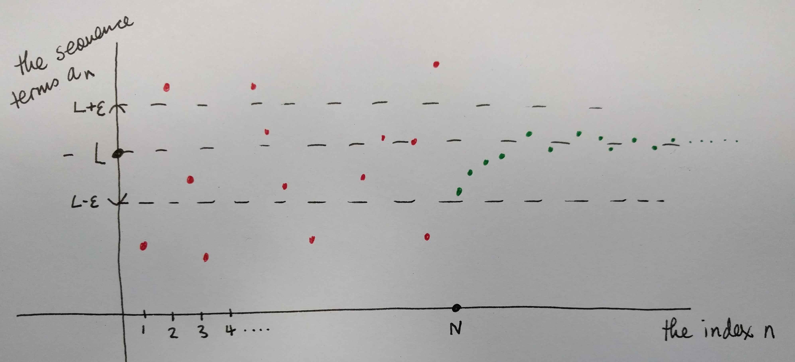
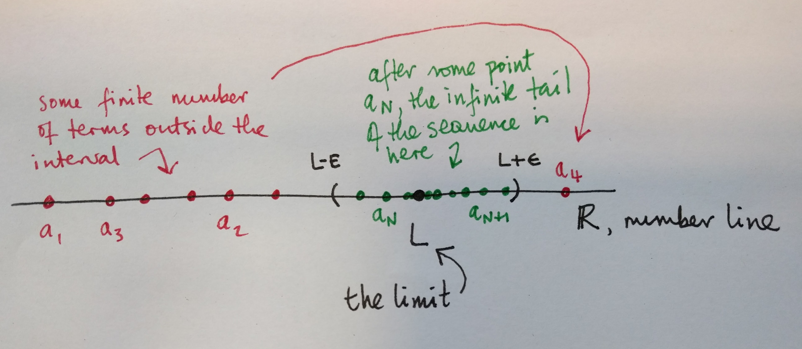
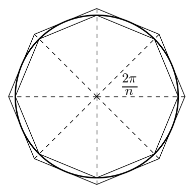

Where possible you should work on the questions in advance and be prepared for discussions on them with your colleagues and tutor. Some questions are straightforward calculation while others require more discussion and thought. The computer icon indicates where computer calculation or programming may be of use.
List the initial five terms of the following sequences.
\(\left \{ a_n \right \}_{n=0}^\infty\), where \(a_n = \frac{3n}{n^2 + 1}\).
var(’n’); a(n) = 3*n/(n^2+1);
The first five terms of the sequence are \[\sage{[a(i) for i in (0..4)]}\]
\(\left \{ b_n \right \}_{n=1}^\infty\), where \(b_n = \frac{2^n}{2+2^n}\).
var(’n’); a(n) = 2^n/(2+2^n);
The first five terms of the sequence area \[\sage{[a(i) for i in (1..5)]}\]
\(\left \{ c_n \right \}_{n=1}^\infty\), where \(c_n = \frac{(-1)^n}{3n}\).
var(’n’); a(n) = (-1)^n/(3*n);
The first five terms of the sequence area \[\sage{[a(i) for i in (1..5)]}\]
\(\left \{ d_n \right \}_{n=1}^\infty\), where \(d_n = \frac{(-1)^{n-1}}{2n}\).
var(’n’); a(n) = (-1)^(n-1)/(2*n);
The first five terms of the sequence area \[\sage{[a(i) for i in (1..5)]}\]
\(\left \{ e_n \right \}_{n=0}^\infty\), where \(e_0 = e_1 = 1\) and for all \(n \geq 2\), \(e_{n} = e_{n-1} + e_{n-2}\).
var(’n’); def a(n): if n==0 or n==1: return 1 else: return a(n-1) + a(n-2);
The first five terms of the sequence area \[\sage{[a(i) for i in (0..4)]}\]
\(\left \{ f_n \right \}_{n=1}^\infty\), where \(f_1 = 3\) and for all \(n \geq 1\), \(f_{n+1} = \dfrac{f_{n}}{n}\).
var(’n’); def a(n): if n==1: return 3 else: return a(n-1)/(n-1);
The first five terms of the sequence are \[\sage{[a(i) for i in (1..5)]}\]
\(\left \{ g_n \right \}_{n=0}^\infty\), where \(g_0 = 2\) and for all \(n \geq 0\), \(g_{n+1} = \dfrac{g_n}{1+g_n}\).
var(’n’); def a(n): if n==0: return 2 else: return a(n-1)/(1+a(n-1));
The first five terms of the sequence area \[\sage{[a(i) for i in (0..4)]}\]
\(\left \{ h_n \right \}_{n=0}^\infty\), where \(h_n = \dfrac{3^n}{(2n)!}\).
var(’n’); def a(n): return 3^n/factorial(2*n)
The first five terms of the sequence area \[\sage{[a(i) for i in (0..4)]}\]
For each of the sequences in question [formulas] find an expression for the \((2m+3)^{\text{rd}}\) element, simplified as far as possible.
var(’n,m’); a(n) = 3*n/(n^2+1);
The element \(a_{2m+3}\) is given by \[a_{2m+3} = \sage{a(2*m+3)}\]
var(’n,m’); a(n) = 2^n/(2+2^n);
The element \(b_{2m+3}\) is given by \[b_{2m+3} = \sage{a(2*m+3)}\]
var(’n,m’); a(n) = (-1)^n/(3*n);
The element \(c_{2m+3}\) is given by \[c_{2m+3} = \sage{a(2*m+3)} = \frac{-1}{3(2m+3)}\]
var(’n,m’); a(n) = (-1)^(n-1)/(2*n);
The element \(d_{2m+3}\) is given by \[d_{2m+3} = \sage{a(2*m+3)} = \frac{1}{2(2m+3)}\]
var(’n,m’); a(n) = (-1)^(n-1)/(2*n);
The element \(e_{2m+3}\) could be expressed as \[e_{2m+3} = e_{2m+2} + e_{2m+1}.\] Getting a more useful closed form expression would involve determining the closed form expression for the element \(e_n\). This can generally be done for linear recurrence relations with enough initial conditions (as here), by finding the roots of the characteristice equation. Refer to section 7.4 of Modern Engineering Mathematics by Glyn James, see link to e-book version of this via the unit’s Moodle area.
It is relatively straightforward to see that a nice solution in terms of factorials for the sequence \(\{f_n\}_{n=1}^\infty\) is given by \[f_n = \frac{3}{(n-1)!},\] so the appropriate expression for \(f_{2m+3}\) is \[f_{2m+3} = \frac{3}{(2m+2)!}.\]
The element \(g_{2m+3}\) can be expressed as \[g_{2m+3} = \frac{g_{2m+2}}{1+g_{2m+2}}.\]
The element \(h_{2m+3}\) can be written as \[h_{2m+3} = \frac{3^{2m+3}}{(4m+6)!}.\]
Consider the sequences in question [formulas].
Decide whether they are increasing, decreasing or neither. Computer plots of sections of the sequence will help with this.
var(’n,m’); a(n) = 3*n/(n^2+1);
The plot of the beginning of \(\left \{ a_n \right \}\) is
var(’n,m’); a(n) = 2^n/(2+2^n);
The plot of the beginning of \(\left \{ b_n \right \}\) is
var(’n,m’); a(n) = (-1)^n/(3*n);
The plot of the beginning of \(\left \{ c_n \right \}\) is
var(’n,m’); a(n) = (-1)^(n-1)/(2*n);
The plot of the beginning of \(\left \{ d_n \right \}\) is
var(’n’); def a(n): if n==0 or n==1: return 1 else: return a(n-1) + a(n-2);
This \(\left \{ e_n \right \}\) (the Fibonacci sequence) begins positive and after the second term each term comes from adding a positive quantity to the previous term – so it is clearly increasing after the second term. The plot of \(\left \{ e_n \right \}\) looks like
var(’n’); def a(n): if n==1: return 3 else: return a(n-1)/(n-1);
The factorial form of \(f_n\) clearly shows that the sequence will be decreasing after the first couple of terms. The plot looks like
var(’n’); def a(n): if n==0: return 2 else: return a(n-1)/(1+a(n-1));
The plot of the beginning of \(\left \{ g_n \right \}\) looks like
var(’n’); def a(n): return 3^n/factorial(2*n)
The plot of the beginning of \(\left \{ h_n \right \}\) looks like
For those that are increasing or decreasing, try and construct a clear argument (proof) for your conclusion using the ratio and/or difference of consecutive terms method.
The sequences \(a\), \(b\), \(|c|\), \(|d|\), \(h\) can all be shown to be decreasing/increasing as appropriate by examining the ration of consecutive terms and showing it is always less than or greater than 1 as appropriate. An equivalent approach to could be taken by considering the difference of consecutive terms and comparing to \(0\). Let’s look at the sequence \(a\) as an example: \[\begin{align*} \frac{a_{n+1}}{a_n} & = \frac{3n+3}{(n+1)^2 + 1} \frac{n^2 +1}{3n} \\ &= \frac{3n^3 + 3n^2 + 3n + 3}{3n^3+6n^2+6n} \\ & = 1 + \frac{-3n^2 -3n + 3}{3n^3+6n^2+6n}\\ &< 1 , \text{ for all $n \geq 1$.} \end{align*}\] The last inequality follows because the numerator in the fraction term is clearly negative and denominator positive, for \(n \geq 1\). Then from the overall inequality above, \(a_{n+1} / a_n < 1\), we get \(a_{n+1} < a_n\) as required, since all the \(a_n\) terms are positive.
For the sequences \(e\), \(f\) and \(g\) we can give more direct arguments based on the initial term(s) and the nature of the recurrence relation.
How well do you understand the definition of convergence for a sequence?
Can you quote it accurately from memory?
Can you draw a suitable diagram illustrating sequence convergence and attach the parameters from the definition to it in the correct way?
Don’t be too attached to the symbols \(x_n, N, \epsilon\) used in the definition in the notes. Can you reliably quote and recognise the definition using entirely different symbols?
These are discussion questions for the students and class. The
type of diagrams I have in mind though for part (b) are like the
following  
Consider the sequence \(\left \{ a_n \right \}_{n=1}^\infty\), where \(a_n = \frac{1}{n^2}\). Does this have a limit and if so prove this by showing that the definition of convergence is satisfied.
In the sequence of terms \(1/n^2\) the denominator is clearly increasing and unbounded as \(n \to \infty\). Therefore the term will be decreasing and convergent with limit \(0\). To prove this formally by the definition of convergence we proceed as follows.
Let \(\epsilon > 0\) be given. We set \(N\) to be equal to the smallest integer which is greater than or equal to \(1/\sqrt{\epsilon}\). Then if \(n > N\) then \(1/n^2 < 1/\left ( 1/\sqrt{\epsilon} \right )^2 = \epsilon\). This is the required inequality and so we conclude that \(1/n^2 \to 0\) as \(n \to \infty\).
Consider the following statements, \(S_1\) and \(S_2\), about a sequence \(\left \{ y_n \right \}_{n=1}^\infty\) which at first glance appear similar to the definition of sequence convergence.
There exists a real value \(\lambda > 0\) and a positive integer \(M\) such that for all \(m > M\), \(\left | y_m - L \right | < \lambda\).
This statment says that for a quantity \(L\) there is a fixed distance \(\lambda\) and a point \(y_M\) in the sequence after which the term \(y_m\) is always within a distance \(\lambda\) of \(L\).
Considering this for a while we see that this implies that the sequence \(\{y_n\}\) is bounded and moreover any bounded sequence will satisfy this statement S1 for any real quantity \(L\) whatsoever. For if a sequence is bounded then it is always within a set distance of zero, and hence of any other number.
So the sequences that satisfy S1 are exactly the bounded sequences.
There exists an integer \(M > 0\) such that for all real values \(\lambda > 0\), if \(m > M\) then \(\left | y_m - L \right | < \lambda\).
This statement says that after some point \(y_M\), the sequence terms are within the distance \(\lambda\) of this quantity \(L\), and that this is true for any real \(\lambda > 0\). How can sequence terms be arbitrarily close to some quanitity \(L\)? This is only possible if all these sequence elements are actually equal to \(L\).
So the statement S2 is true, only of the sequences which are eventually constant, i.e. after some point all the sequence elements are equal to this quantity \(L\).
For each of these statements can you give some examples of sequences (and values \(L\)) that satisfy them? For each statement can you characterize all the sequences that satisfy them, i.e. in plainer language what are \(S_1\) and \(S_2\) saying about a sequence?
Determine the limit of the following convergent sequences. You might need the algebra of limits theorem and other results. Your solutions should explain clearly the reasoning used.
Parts (a) - (e) can be solved by applying the algebra of limits theorem. The proofs are summarised below but should be supplemented with some commentary as well.
\(\left \{ a_n \right \}_{n=0}^\infty\), where \(a_n = \frac{3n}{n^2 + 1}\).
\[\lim_{n \to \infty} a_n = \lim_{n \to \infty} \frac{3/n}{1+1/n^2} = \frac{0}{1+0} = 0.\]
\(\left \{ b_n \right \}_{n=1}^\infty\), where \(b_n = \frac{2^n}{2+2^n}\).
\[\lim_{n \to \infty} b_n = \lim_{n \to \infty} \frac{1}{1/2^{n-1}+1} = \frac{1}{0+1} = 1.\]
\(\left \{ c_n \right \}_{n=1}^\infty\), where \(c_n = \frac{5n^2 - 2}{3n^2 - n}\).
\[\lim_{n \to \infty} c_n = \lim_{n \to \infty} \frac{5 - 2/n^2}{3 - 1/n} = \frac{5 - 0}{3 - 0} = 5/3.\]
\(\left \{ d_n \right \}_{n=1}^\infty\), where \(d_n = \frac{2n}{3n - 1} - \frac{n^2 + 1}{2 - n^2}\).
\[\lim_{n \to \infty} d_n = \lim_{n \to \infty} \left ( \frac{2}{3 - 1/n} \right ) - \lim_{n\to \infty} \left ( \frac{1 + 1/n^2}{2/n^2 - 1} \right )= \frac{2}{3 - 0} - \frac{1+0}{0 -1}= 5/3.\]
\(\left \{ e_n \right \}_{n=1}^\infty\), where \(e_n = \frac{n^3}{n^3 + 1}\).
\[\lim_{n \to \infty} e_n = \lim_{n \to \infty} \frac{1}{1+1/n^3} = \frac{1}{1+0} = 1.\]
\(\left \{ f_n \right \}_{n=1}^\infty\), where \(f_n = \frac{\cos{(3n)}}{n^{1/3} + 1}\).
This questions requires the use of the Squeeze Theorem (not in the notes, but I will present it in the lectures) First we use the boundedness of the cosine function to say \[\frac{-1}{n^{1/3} +1} \leq f_n \leq \frac{1}{n^{1/3} +1}.\] Then we notice that the sequences at the ends of this inequality both coverge to zero as the denominators are increasing and unbounded. Therefore by the Squeeze Theorem \(f_n \to 0\) as \(n \to \infty\).
Confirm your results by comparing to computer plots of the sequences.
Consider the following sequence (which continues in the suggested way) \[\sqrt{2}, \,\, \sqrt{2\sqrt{2}}, \,\, \sqrt{2\sqrt{2\sqrt{2}}}, \,\, \sqrt{2\sqrt{2\sqrt{2\sqrt{2}}}}, \dots .\]
Formulate this as a sequence defined by a recurrence relation.
This is the sequence \(\{a_n\}_1^\infty\) where \(a_1 = \sqrt{2}\) and for all \(n\geq 1\), \(a_{n+1} = \sqrt{2a_n}\).
With the aid of the Monotone Convergence Theorem prove that the sequence is convergent.
First we establish the monotinicity of the sequence. Numerical investigations suggest the sequence is increasing. Certainly \(a_1 < 2\) and thereafter \(a_n = \sqrt{a_n}\sqrt{a_n} < \sqrt{2} \sqrt{a_n} = a_{n+1}\) so the sequence is always increasing. (This is really a quick proof by induction. You might mention as much although the students will not neccessarily have covered it yet).
Next we establish that the sequence is bounded. Numerical investigation suggests increasing convergence to 2, so 2 seems a likely upper bound. Certainly \(a_1 < 2\), and thereafter \(a_{n+1} = \sqrt{2} \sqrt{a_n} < \sqrt{2} \sqrt{2} = 2\). (Again, this is really proof by induction.)
So the sequence is increasing and bounded above, therefore it is convergent by the Monotone Convergence Theorem.
Determine the limit.
Since we now know the limit exists let us denote it by \(a\). Then by the algebra of limits theorem the limit \(a\) satisfies \[\begin{align*} & a = \sqrt{2 a} \\ \Leftrightarrow \, \, & a = 2. \end{align*}\]
Consider the sequence \(\left \{ a_n \right \}_{n=0}^\infty\) defined by the recurrence relation \[a_0 = 1 , \quad \text{ for all } n \geq 1, \, \, a_{n} = 3 - \frac{1}{a_{n-1}}.\] Prove that this sequence is increasing, bounded and hence convergent. Determine its limit.
Firstly, all sequence elements are bounded below by 1, as \(a_0 = 1\) and thereafter \(a_n = 3 - 1/a_{n-1} \geq 3 - 1 = 2\). Hence all the elements \(a_n\) are positive and so sequence is bounded above by 3.
Next we prove that the sequence is increasing, again taking an inductive approach. By inspection we see that \(a_2 > a_1\), then if we assume that \(a_{m} > a_{m-1}\) and argue from here as follows \[\begin{align*} a_m > a_{m-1} > 0 &\Rightarrow 1/a_m < 1/a_{m-1} \\ &\Rightarrow -1/a_m > -1/a_{m-1} \\ &\Rightarrow 3 -1/a_m > 3 -1/a_{m-1} \\ &\Rightarrow a_{m+1} > a_m, \end{align*}\] and hence the sequence is always increasing.
So by the Monotone Convergence Theorem the sequence is convergent. If we let \(a = \lim_{n \to \infty} a_n\) and apply the algebra of limits theorem to the recurrence relation we get \[a = 3 - 1/a.\] This is equivalent to \[a^2 - 3a + 1 = 0.\] This has the solutions \[a = -\frac{1}{2} \, \sqrt{5} + \frac{3}{2}, \quad a = \frac{1}{2} \, \sqrt{5} + \frac{3}{2}.\] But only the second one of these is in the range \(1\leq a < 3\) so we conclude that the limit of the sequence is \[a = \frac{1}{2} \, \sqrt{5} + \frac{3}{2} \approx 2.62 .\]
Consider the sequence \(\left \{ x_n \right \}_{n=0}^\infty\) defined by the recurrence relation \[x_0 = 2 , \quad \text{ for all } n \geq 1, \, \, x_{n} = \frac{1}{3 - x_{n-1}}.\] Is this sequence convergent? If so, determine the limit.
Can be solved using similar arguments to the previous two questions. Numerical investigation suggests a decreasing convergent sequence with limit of approximately \(1/4\).
establish that the sequence elements are bounded above by 2 and below by 0.
prove decreasing nature
conclude limit exists, by MCT.
then solve the equation \(x=1/(3-x)\) and identify which solution is the limit.
Analyze the convergence/divergence of the sequence \(\left \{ y_n \right \}_{n=0}^\infty\) defined by \(y_n = nr^n\), where \(r \in \mathbb{R}\). Your conclusion should say it diverges for these values of \(r\), converges for those, and preferably determine the limit when it exists.
We need separate arguments for various cases of \(r \in \mathbb{R}\).
If \(r=0\) then for all \(n \geq 1\), \(y_n = 0\) and the sequence is trivially convergent.
If \(|r| \geq 1\) then \(|y_n|\) is increasing and unbounded and so these sequences are divergent.
If \(0<|r| < 1\) then the sequence is eventually decreasing since the ratio of consecutive terms satisfies \[\frac{|y_{n+1}|}{|y_n|} = \left ( 1 + \frac{1}{n} \right ) |r|.\] Now the \(1+1/n\) factor is decreasing and converging to 1, so eventually it will pass below the value \(1/|r|\) and from then on we have \(|y_{n+1}| < |y_n|\). So the sequence is decreasing in absolute value and has absolute value bounded below by 0. So by the MCT the sequence is converging. Let \(y = \lim_{n \to \infty} y_n\). There is a recurrence type relation satisfied by the sequenc which is \[y_{n+1} = \frac{n+1}{n} r y_n = (1+1/n)r y_n,\] and so by the algebra of limits theorem we have \[y = r y,\] which can only be true if \(y=0\).
Proving these results will require some careful handling of the convergence definition, like you have seen in the other proofs involving it up to now.
Suppose that the sequence \(\left \{ x_n \right \}_{n=1}^\infty\) is bounded and that \(y_n \to 0\) as \(n \to \infty\). Prove that the product sequence \(\left \{ x_n y_n \right \}_{n=1}^\infty\) also converges to \(0\), i.e. \(x_n y_n \to 0\) as \(n \to \infty\).
Let \(M\) be a bound for the sequence \(\{x_n\}\), i.e. for all \(n\), \(|x_n| \leq M\). Let \(\epsilon > 0\) be given. Since \(y_n\) converges to 0 there will exist an \(N\) such that if \(n \geq N\) then \(|y_n| < \epsilon / M\). Then for all \(n \geq N\) we have \[\begin{align*} |x_n y_n | & = |x_n| |y_n| \\ & \leq M |y_n| \\ & < M \epsilon / M = \epsilon. \end{align*}\] This proves that \(x_n y_n \to 0\) as required.
Convergence of subsequences: Suppose that \(\left \{ n_j \right \}_{j=1}^\infty = n_1, n_2, n_3, \dots\) is a strictly increasing sequence of positive integers, i.e. for all \(j \geq 1\), \(n_{j+1} > n_j \geq 1\). Prove that if \(a_m \to L\) as \(m \to \infty\) then the subsequence \(\left \{ a_{n_j} \right \}_{j=1}^\infty\) also converges to the same limit \(L\), i.e. \[a_{n_j} \to L \text{ as } j \to \infty.\] This result is a precise statement of the intuitive result that if a sequence \(\{a_n\}\) is convergent then any infinite selection of terms from the sequence will still converge to the same limit.
This results says that every subsequence of a convergent sequence is also convergent and tending to the same limit as the sequence itself. It’s an example of something that kind of takes more work to state the result carefully than it does to prove it.
Simply put, for all \(\epsilon > 0\) there exists a \(N_\epsilon\) such that \(n \geq N_\epsilon\) implies \(|a_n - L| < \epsilon\). This is the definition of convergence for \(a_n \to L\). The very same choice of \(N_\epsilon\) will work for the subsequence as if \(j \geq N_\epsilon\) then \(n_j \geq N_\epsilon\) since \(n_j \geq j\). There \(a_{n_j} \to L\) as required.
The Squeeze lemma: Suppose we have three infinite sequences \(\{a_n\}, \{b_n\}\) and \(\{c_n\}\) and a point \(N\geq 1\) such that for all \(n \geq N\) we have \(a_n \leq b_n \leq c_n\). If \(\{a_n\}\) and \(\{c_n\}\) are both convergent to the same limit \(L\) prove that \(\{b_n\}\) must also converge to \(L\).
Let \(\epsilon > 0\) be given. As \(\{a_n\}\) and \(\{c_n\}\) both converge to \(L\) there exists positive integers \(N_1\) and \(N_2\) such that if \(n \geq N_1\) then \(|a_n - L | < \epsilon\) and if \(n \geq N_2\) then \(|c_n - L|<\epsilon\). Let \(M = \max(N,N_1,N_2)\). Then if \(n \geq N\) we have \(|b_n - L| < \epsilon\) since if \(a_n\) and \(c_n\) are both in the interval of radius \(\epsilon\) around \(L\) then so must \(b_n\) be there as \(b_n\) will be between \(a_n\) and \(c_n\).
Therefore \(\{b_n \}\) converges to \(L\) also.
This question builds a method for computing estimates of \(\pi\) using a precise geometric method based on the technique used by Archimedes to estimate \(\pi\).

Consider figure 1 which shows a unit circle (i.e. with radius \(1\)) together with two \(n\)-sided regular polygons. The inner polygon is the largest such one that fits inside the circle, i.e. its vertices lie on the circle, and the outer polygon is the smallest such one containing the circle, i.e. the midpoints of its sides lie on the circle. The angle formed at the centre of the circle by two adjacent polygon vertices is thus \(2\pi/n\) as shown. The circle has area \(\pi\). Let \(a_n\) denote the area of the inner \(n\)-sided polygon and \(b_n\) denote the area of the outer polygon. By studying \(a_n\) and \(b_n\) we will obtain a sequence of successively narrower intervals containing \(\pi\).
Make sure you appreciate why for every \(n \geq 3\) we have \(a_n < \pi < b_n\), and that as \(n\) increases we will obtain successively narrower intervals estimating \(\pi\).
Carefully consider the triangles making up the polygons and prove that \[a_n = \frac{n}{2} \sin{\left ( \frac{2\pi}{n}\right )} \quad \text{ and } \quad b_n = n \tan{\left (\frac{\pi}{n}\right )}.\]
With the help of various trigonometric formulas derive two recurrence relations, one giving \(a_{2n}\) in terms of \(a_n\), the other giving \(b_{2n}\) in terms of \(b_n\). The recurrence relations you are aiming for are quadratic in nature, i.e. involving constants, the usual arithmetic operations of addition/subtraction/multiplication/division and squaring and square roots.
The recurrence relation for \(a_n\) is \[a_{2n} = n \sqrt{\frac{1}{2} \left (1 - \sqrt{1 - \left ( \frac{2a_n}{n} \right )^2} \right )}.\]
By considering the inscribed and circumscribed squares prove the initial values \(a_4 = 2\) and \(b_4 = 4\) and then use your recurrence formulas to generate some interval estimates of \(\pi\).
Code your recurrence formulas in a suitable programming language (Matlab, Sage, Python, Excel, …) and see how accurately you can estimate \(\pi\).
You may get curious results as you compute \(a_{2^m}\) and \(b_{2^m}\) for larger and larger \(m\), such as the sequence failing to consistenly increase/decrease or failing to return a value at all. This is because you have run up against rounding errors due to the computer only being able to store numbers to a certain precision (i.e. number of digits accuracy). Increase the accuracy of your estimates by increasing the precision of the numbers in your computation. Some information available from:
Matlab – http://uk.mathworks.com/help/symbolic/numbers-and-precision.html
SageMath – http://doc.sagemath.org/pdf/en/reference/rings_numerical/rings_numerical.pdf